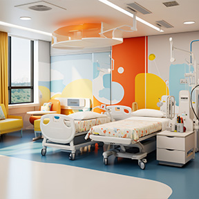

Çocuk Genel Cerrahisi Uzmanlık Alanları
Çocuk genel cerrahisi, çocuklarda göğüs ve karın boşluğu içerisinde yer alan organların (yemek borusu, mide, bağırsaklar, karaciğer, dalak vb.) ve yumuşak dokuların cerrahi hastalıkları ile ilgilenen geniş kapsamlı bir bölümdür. Adana'da bu alanda referans isimlerden olan Doç. Dr. İlknur Banlı Cesur, çocukların cerrahi sorunlarına bilimsel ve şefkatli çözümler sunmaktadır.
Genel cerrahi kapsamındaki hastalıkların birçoğu acil müdahale gerektiren (apandisit gibi) veya yaşam kalitesini artıran (fıtıklar gibi) durumlardır. Bu operasyonlarda amacımız, çocuğun fizyolojik dengesini bozmadan, en az cerrahi travma ile sağlığına kavuşmasını sağlamaktır. Modern hastane ortamında sağladığımız cerrahi hizmetlerle çocuklarımız güvenle gülümsemeye devam ediyor.
Sık Yapılan Genel Cerrahi Ameliyatları
Çocukluk çağında en sık karşılaşılan genel cerrahi vakaları şunlardır:

- Kasık Fıtığı (İnguinal Herni)
- Göbek Fıtığı (Umbilikal Herni)
- Akut Apandisit (Laparoskopik/Açık)
- Kabızlık ve Anal Fissür (Makat çatlağı)
- Mide Reflüsü ve Gastrostomi uygulamaları
- Boyun Kistleri ve Fistülleri
Kasık Fıtığı Tedavisi
Çocuklarda kasık fıtığı kendiliğinden geçmez, mutlaka cerrahi olarak onarılmalıdır.
- Günübirlik cerrahi (Aynı gün taburcu)
- Boğulmuş fıtık riskine karşı erken müdahale
- Estetik dikiş teknikleri
- Hızlı ve ağrısız iyileşme süreci
Apandisit Müdahalesi
Çocuklarda karın ağrısının en önemli nedenlerinden biri olan apandisitte erken tanı hayat kurtarıcıdır.
- Laparoskopik (kapalı) yöntem tercihi
- Delinmiş apandisitlerde hassas bakım
- Ameliyat sonrası hızlı beslenmeye geçiş
- Deneyimli çocuk cerrahı farkı
Doğru Tanı, Uzman Cerrahi
Çocuğunuzun sağlık sorunlarında cerrahi bir karar verilmesi gerektiğinde, yanınızdayız. Adana'da Doç. Dr. İlknur Banlı Cesur kliniğinde, güncel tıp literatürüne uygun, kanıta dayalı ve hastalarımızın konforunu maksimize eden bir tedavi yaklaşımı benimsiyoruz. Çocuk genel cerrahisi geniş bir deryadır ve biz bu deryada çocuklarımıza en güvenli limanı sunmak için çalışıyoruz.
Göbek fıtıkları kasık fıtıklarının aksine genellikle kendiliğinden kapanma eğilimindedir. Eğer fıtık çok büyük değilse veya bir soruna yol açmıyorsa 4 yaşına kadar beklenebilir. Ancak kasık fıtıkları tanı konulur konulmaz ameliyat edilmelidir.
Genellikle fıtık ve apandisit gibi rutin ameliyatlar sonrası çocuklar 2-3 gün içinde ev içinde hareketlenir, 1 hafta sonra ise aktif oyun ve okul hayatına dönebilirler. Sadece ağır sporlar için 4-6 hafta beklemek gerekebilir.